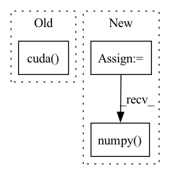

Pattern ID :40544
Before Change
img, ratio = preproc(img, self.test_size, self.rgb_means, self.std)
img_info["ratio"] = ratio
img = torch.from_numpy(img).unsqueeze(0).cuda()
with torch.no_grad():
t0 = time.time()
outputs = self.model(img)After Change
img_info["ratio"] = ratio
img = torch.from_numpy(img).unsqueeze(0)
if self.device == "gpu":
img = img.cuda()
with torch.no_grad():
t0 = time.time()
outputs = self.model(img)
if self.decoder is not None:
outputs = self.decoder(outputs, dtype=outputs.type())
if self.device == "gpu":
outputs = outputs.cpu().numpy()
outputs = postprocess(
outputs, self.num_classes, self.confthre, self.nmsthre
)
logger.info("Infer time: {:.4f}s".format(time.time()-t0))In pattern: SUPERPATTERN
Frequency: 3
Non-data size: 3
Instances Fragment ID: 114766929
Project Name: megvii-basedetection/yolox
Commit Name: 83d87ba0fafc10e028ff6bc7346ff127b304f391
Time: 2021-07-22
Author: gezheng121@foxmail.com
File Name: tools/demo.py
M Class Name: Predictor
N Class Name: Predictor
M Method Name: inference(2)
N Method Name: inference(2)
M Parent Class: object
N Parent Class: object
M File Name: tools/demo.py
N File Name: tools/demo.py
M Start Line: 118
M End Line: 118
N Start Line: 119
N End Line: 130
Before Change
def predict(self, x_test):
if not self._fitted:
raise ValueError("model is not fitted yet!")
x_test = torch.from_numpy(x_test.values).float().cuda()
self.dnn_model.eval()
with torch.no_grad():
preds = self.dnn_model(x_test).detach().cpu().numpy()After Change
raise ValueError("model is not fitted yet!")
x_test = torch.from_numpy(x_test.values).float()
if self.use_gpu:
x_test = x_test.cuda()
self.dnn_model.eval()
with torch.no_grad():
if self.use_gpu:
preds = self.dnn_model(x_test).detach().cpu().numpy()
else:
preds = self.dnn_model(x_test).detach().numpy()
return preds
def score(self, x_test, y_test, w_test=None):
// Remove rows from x, y and w, which contain Nan in any columns in y_test. Fragment ID: 114766926
Project Name: microsoft/qlib
Commit Name: 992983ff4cd694aada7e13b4cec0578a322d3583
Time: 2020-10-12
Author: bxd98@126.com
File Name: qlib/contrib/model/pytorch_nn.py
M Class Name: DNNModelPytorch
N Class Name: DNNModelPytorch
M Method Name: predict(2)
N Method Name: predict(2)
M Parent Class: Model
N Parent Class: Model
M File Name: qlib/contrib/model/pytorch_nn.py
N File Name: qlib/contrib/model/pytorch_nn.py
M Start Line: 264
M End Line: 268
N Start Line: 270
N End Line: 280
Before Change
test_idx = class1_test + class2_test
random.shuffle(test_idx)
model_meta_trained = get_model(args.model, features.size(1), n_way, args.cuda).cuda()
model_meta_trained.load_state_dict(torch.load("model.pkl"))
model_meta_trained = train_regression(model_meta_trained, features[train_idx], labels_local[train_idx], args.epochs, args.weight_decay, args.lr)
acc_test = test_regression(model_meta_trained, features[test_idx], labels_local[test_idx])After Change
features = torch.FloatTensor(features).float().to(device)
labels = torch.LongTensor(labels).to(device)
accuracy_meta_test = []
node_num = adj.shape[0]
class_label = list(np.unique(labels.cpu()))
combination = list(combinations(class_label, 2))
train_file = pd.read_csv(args.data_dir + "/fold" + str(args.fold_n) + "/train.csv")
test_file = pd.read_csv(args.data_dir + "/fold" + str(args.fold_n) + "/test.csv")
test_label = list(np.unique(test_file.label.values))
train_label = list(np.unique(train_file.label.values))
if args.model == "SGC":
features = sgc_precompute(features, adj, args.degree)
print("Train_Label_List {}: ".format(train_label))
print("Test_Label_List {}: ".format(test_label))
model = get_model(args.model, features.size(1), n_way, args.cuda)
for j in range(iteration):
random.seed(j)
labels_local = labels.clone().detach()
select_class = random.sample(train_label, n_way)
print("ITERATION {} Train_Label: {}".format(j+1, select_class))
class1_idx = []
class2_idx = []
for k in range(node_num):
if(labels_local[k] == select_class[0]):
class1_idx.append(k)
labels_local[k] = 0
elif(labels_local[k] == select_class[1]):
class2_idx.append(k)
labels_local[k] = 1
for m in range(step):
random.seed(m)
class1_train = random.sample(class1_idx,train_shot)
class2_train = random.sample(class2_idx,train_shot)
class1_test = [n1 for n1 in class1_idx if n1 not in class1_train]
class2_test = [n2 for n2 in class2_idx if n2 not in class2_train]
train_idx = class1_train + class2_train
random.shuffle(train_idx)
test_idx = class1_test + class2_test
random.shuffle(test_idx)
model = train_regression(model, features[train_idx], labels_local[train_idx], args.epochs, args.weight_decay, args.lr)
acc_query = test_regression(model, features[test_idx], labels_local[test_idx])
accuracy_meta_test.append(acc_query)
reset_array()
print("Meta-Train_Accuracy: {}".format(torch.tensor(accuracy_meta_test).numpy() .mean()))
torch.save(model.state_dict(), "model.pkl")
Fragment ID: 114766922
Project Name: mims-harvard/g-meta
Commit Name: 8c759d99d745c57780c9bd2d53d7d458bfbd22a2
Time: 2020-05-05
Author: kexinhuang@hsph.harvard.edu
File Name: few_shot_GNN/sgc_fewshot/citation.py
M Class Name: AnonimousClass
N Class Name: AnonimousClass
M Method Name: main(0)
N Method Name: main(0)
M Parent Class:
N Parent Class:
M File Name: few_shot_GNN/sgc_fewshot/citation.py
N File Name: few_shot_GNN/sgc_fewshot/citation.py
M Start Line: 42
M End Line: 148
N Start Line: 48
N End Line: 166